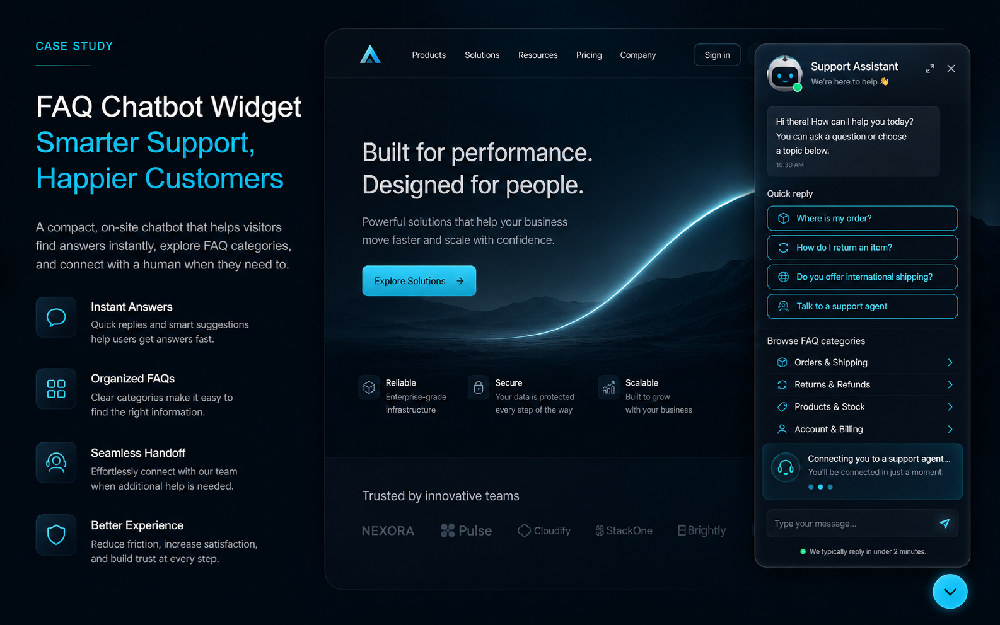

Interactive Prototype
FAQ Chatbot Widget
A chatbot-style FAQ prototype for local-business websites, using quick replies, short answers, and a final contact handoff.

Website AssistantFAQ handoff prototype
Concept DemoLocal StudioOnline now
5Quick paths
24hReply promise
Hi, I can answer common questions and guide visitors toward pricing, timing, services, booking, or contact.